Featured Publications
Discover key scientific findings and methodological innovations from our team.
A Deep Learning Pipeline for Mapping In Situ Network-Level Neurovascular Coupling in Multi-Photon Fluorescence Microscopy
Abstract: Functional hyperemia is a well-established hallmark of healthy brain function, wherein local neural activity drives a rapid, spatially targeted increase in blood flow. Though a detailed, mechanistic understanding of neurovascular coupling has remained elusive, mesoscale in vivo imaging of neural and vascular dynamics has offered key insights. Here, we introduce a deep learning pipeline for automated, scalable mapping of neurovascular coupling across cortical networks using simultaneous two-photon calcium imaging and intrinsic optical signal imaging of hemodynamics through a chronic cranial window in awake mice.
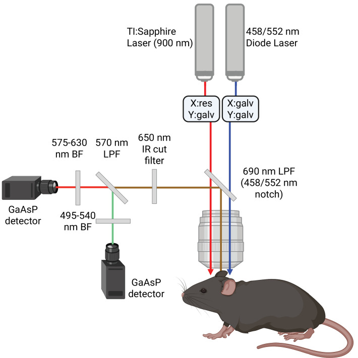
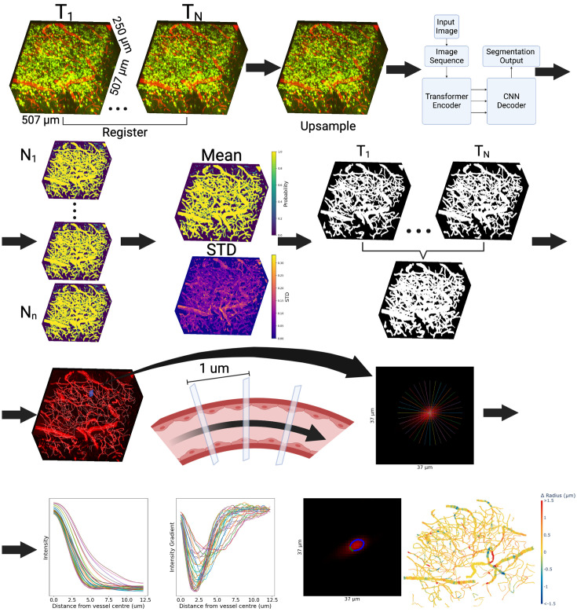
Parametrizing Alternating Current Stimulation for Neuromodulation
Abstract: The clinical use of alternating current stimulation (ACS) has been confounded by inconsistent outcomes. To address this, we integrated ACS with concurrent intracerebral electrophysiology and two-photon fluorescence microscopy in rats to characterize the parameter space of ACS-driven neuromodulation. We systematically varied stimulation frequency, amplitude, and duration while simultaneously recording local field potentials, neuronal spiking, and microvascular hemodynamics.
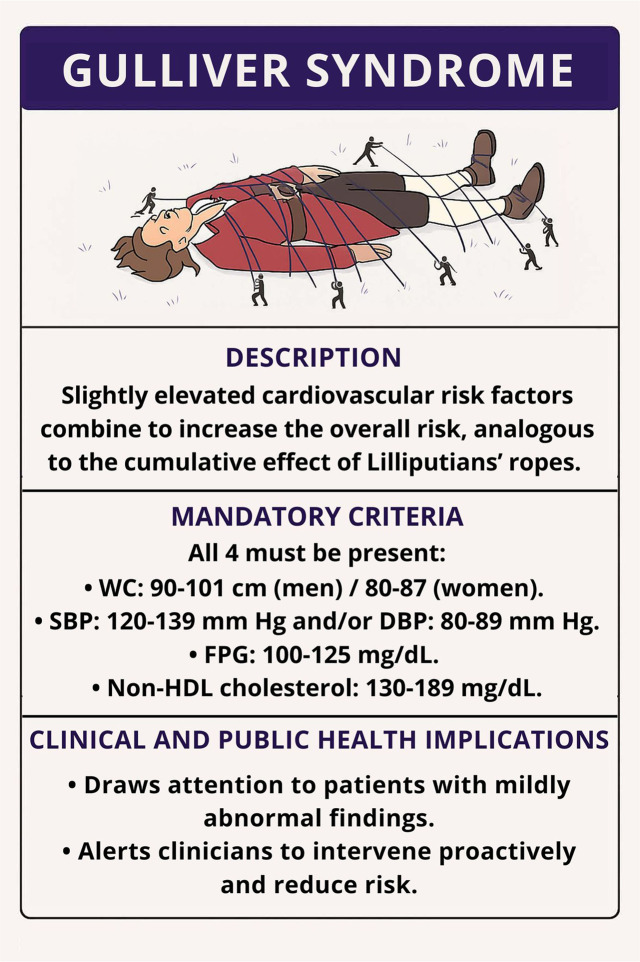
Persistent Dysmorphology and Dysfunction of the Brain Microvasculature Following Repeated Trauma
Abstract: Mild traumatic brain injury typically produces no abnormalities on neuroimaging at the time of the injury. We used in vivo two-photon fluorescence microscopy to longitudinally track cortical microvascular structure and function in mice subjected to repeated mild closed-head injury, revealing persistent dysmorphology and dysfunction of the microvasculature that outlasts the acute injury phase and may underlie chronic post-concussion symptoms.
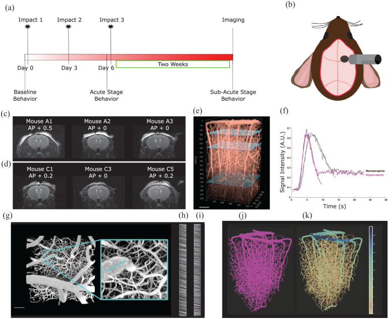
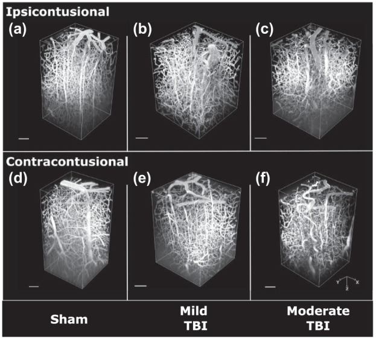
Stable Neuronal Representations to Repeated Stimulation Underlie Cognitive Resilience in Alzheimer's Disease Pathology
Abstract: While Alzheimer's Disease (AD) typically triggers cognitive decline, some individuals with significant AD pathology maintain normal cognition into late life. We used cognitive testing to identify cognitively resilient 13-month-old TgF344-AD rats, followed by Neuropixels recording from 8500 neurons during repeated somatosensory stimulation. Cognitively resilient TgAD rats recruited fewer neurons yet displayed more stable neuronal representations during repeated stimulations, with reduced excitatory spike burstiness and a distinct pattern of functional synaptic connectivity.
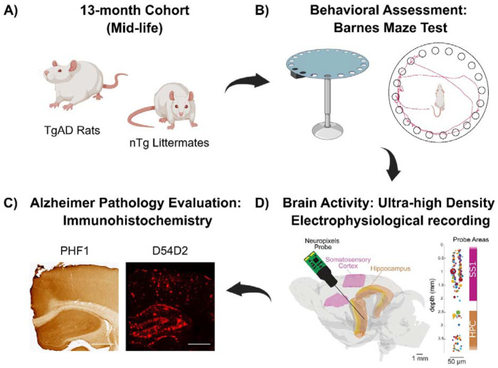
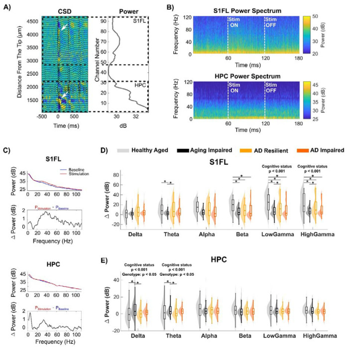
Stepwise Connectivity of the Entorhinal Cortex Along Connectomic Gradients in Alzheimer's Disease
Abstract: The entorhinal cortex is one of the earliest sites of tau tangle deposition in Alzheimer's disease. We mapped the stepwise connectivity of the entorhinal cortex along principal connectomic gradients, revealing how tau pathology may propagate through structurally connected brain networks. Our findings provide a connectivity-based framework for understanding the spatiotemporal progression of AD neurodegeneration.
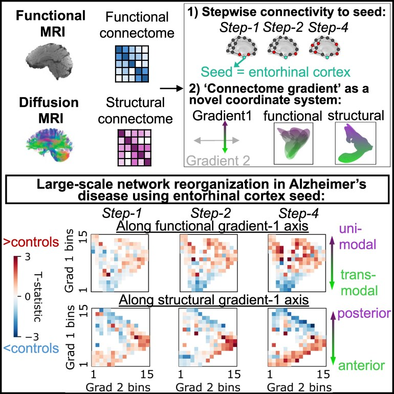
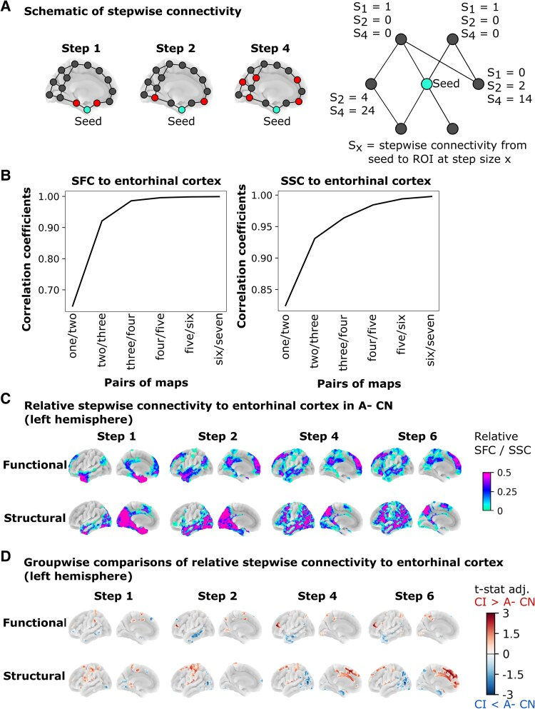
Deep Brain Stimulation-Induced Normalization of Hippocampal Synchrony in a Transgenic Rat Model of Alzheimer's Disease
Abstract: Alzheimer's disease (AD) is characterized by disrupted neural network dynamics and neuronal loss. Deep brain stimulation (DBS) may restore network function. We used 16-month-old TgF344-AD and NTg rats to investigate hippocampal neuronal activity across a range of DBS parameters. With increasing DBS frequency and amplitude, hippocampal power and phase-amplitude coupling rose in all rats. TgAD rats showed attenuated power but increased PAC responses to DBS compared to NTgs, providing a foundation for tailoring DBS parameters to compensate for distinct neuronal deficits in established AD.
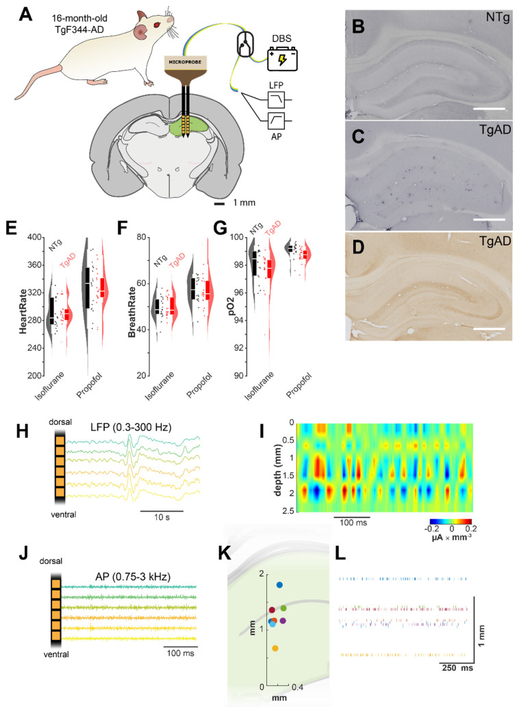
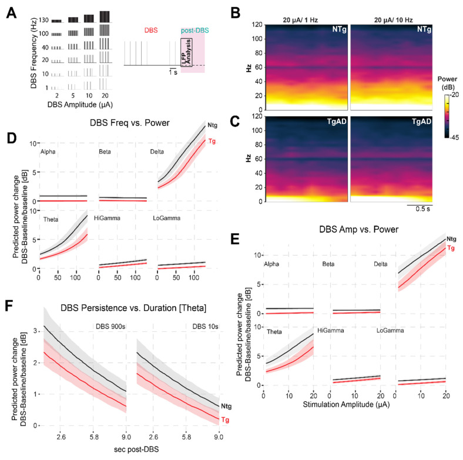
High-Caloric Intake Rescues Early Symptomatic AD-Induced Hippocampal Neurovascular Coupling Deficits
Abstract: Alzheimer's disease (AD) involves progressive hippocampal dysfunction and atrophy. This study examined the effects of a high-carbohydrate, high-fat (HCHF) diet in 12-month-old TgF344-AD rats. CHOW-fed TgAD rats showed reduced hippocampal cerebral blood flow, CBF changes spread, and neuronal power responses to somatosensory stimulation; all of these deficits were improved on the HCHF diet. The transiently improved neurovascular and electrophysiological metrics may be a manifestation of metabolically dysregulated AD brain benefitting from increased metabolite availability.
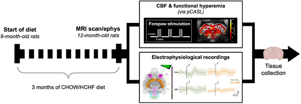
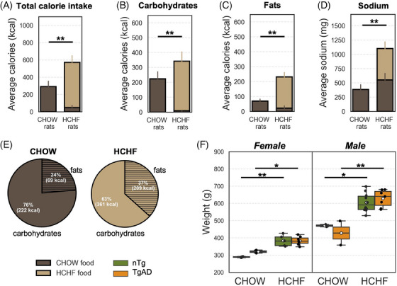
A Deep Learning Pipeline for Three-Dimensional Brain-Wide Mapping of Axonal Connectivity at Single-Axon Resolution
Abstract: Teravoxel-scale, cellular-resolution images of cleared rodent brains acquired with light sheet fluorescence microscopy present an opportunity for brain-wide mapping of axonal connectivity at single-axon resolution. We introduce MAPL3, an end-to-end pipeline that integrates self-supervised learning with an innovative deep architecture to capture local and global brain-wide axonal projections. MAPL3 enables subject- and population-level quantitative laminar analysis and outperforms state-of-the-art methods.
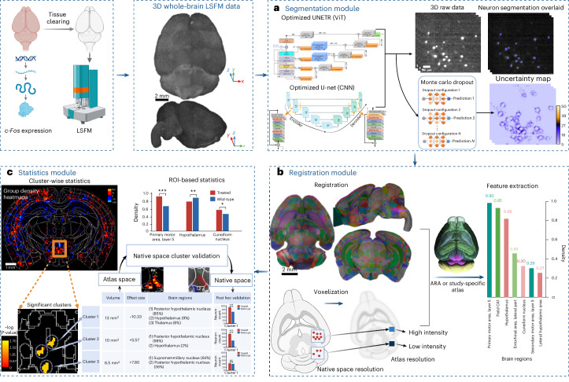
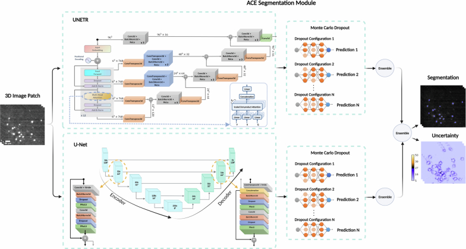
High Caloric Intake Improves Neuronal Metabolism and Functional Hyperemia in a Rat Model of Early AD Pathology
Abstract: While obesity has been linked to both increased and decreased rate of cognitive decline in Alzheimer's Disease (AD) patients, there is no consensus on the interaction between obesity and AD. The TgF344-AD rat model was used to investigate the effects of high carbohydrate, high fat (HCHF) diet on brain glucose metabolism and hemodynamics. In presymptomatic AD, HCHF exerted detrimental effects; in contrast, HCHF consumption was beneficial in established AD, resolving the AD-progression associated attenuation in hippocampal glucose uptake and functional hyperemia.
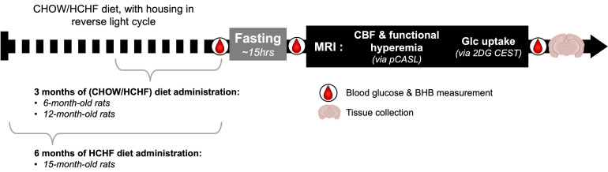
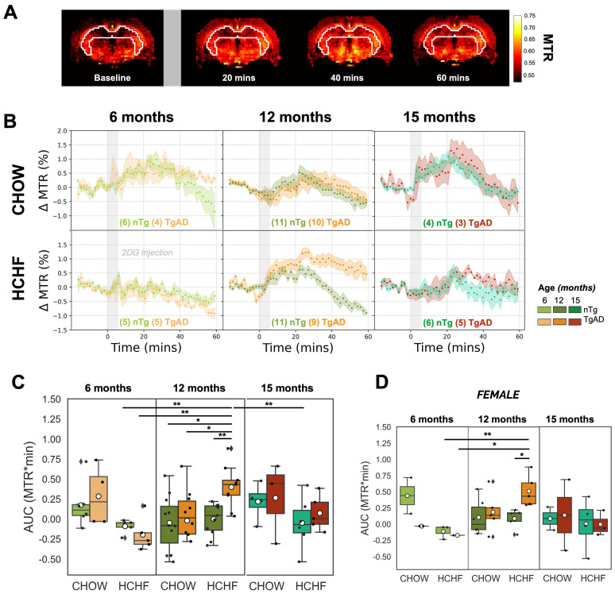
Network Response of Brain Microvasculature to Neuronal Stimulation
Abstract: Neurovascular coupling (NVC), or the adjustment of blood flow in response to local neural activity, underpins functional neuroimaging. We simultaneously recorded neural and vascular activity across cortical layers and columns using Neuropixels probes and two-photon microscopy during focal optogenetic stimulation. Our results reveal that the microvascular network response extends well beyond the zone of direct neural activation, with vessel-level hemodynamics shaped by the topology of the surrounding network.
Societies & Conferences
We are active members of major international bioimaging and neuroscience societies.
View Society & Conference Affiliations